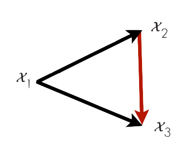

Visualizing Consistency-Based Learning

We visualized the result of evaluating various models with and without consistency on the same (non-cherry-picked) YouTube video. Below you can select different target tasks to see how well the consistency works. You can also visualize the perceptual domain predictions originated from the target. The prediction is done frame-by-frame without any temporal smoothing.